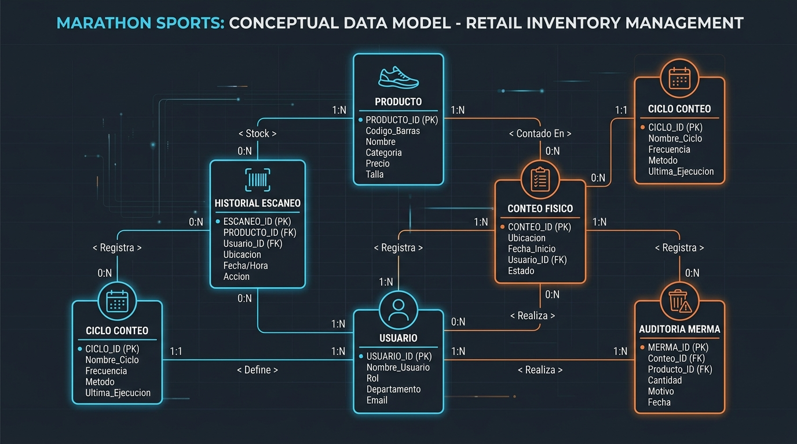
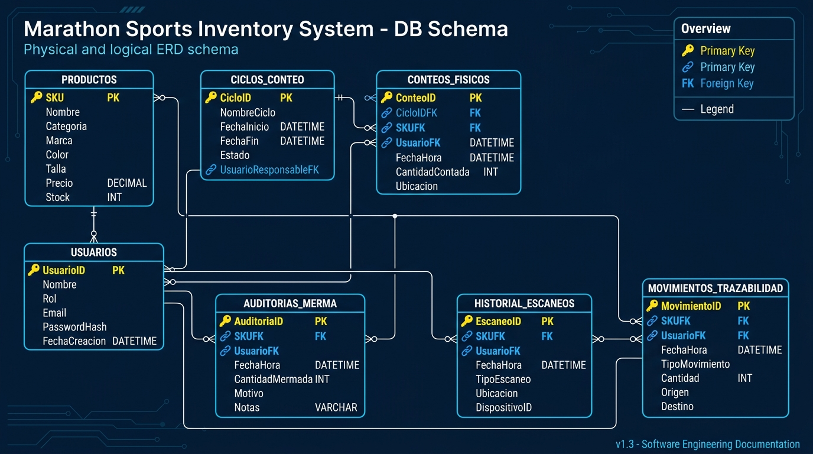

Flujo Conceptual del Conteo Cíclico Fraccionado
El modelo conceptual describe las reglas del negocio de Marathon Sports: cómo la programación mensual fraccionada de los días 9, 19 y 28 segmenta los productos, registra las lecturas de los operarios y escala las mermas a la jefatura de tienda.
• Jefe de Tienda
• Auditor Calzado
• Operador Tienda"] CICLO["📅 CICLO CONTEO
• Días 9, 19, 28
• Línea Programada
• Estado"] CONFIG["⚙️ CONFIGURACIÓN
• Muestreo ABC
• Responsables"] PRODUCTO["👟 PRODUCTO
• SKU / EAN-13
• Stock SAP MB52
• Piso / Almacén / Vitrina"] CONTEO["📋 CONTEO FÍSICO
• Unidades Contadas
• Fecha & Ubicación"] ESCANEO["📷 HISTORIAL ESCANEO
• Lectura Código Barras
• Timestamp Auditoría"] AUDITORIA["⚠️ AUDITORÍA MERMA
• Discrepancia SAP vs Físico
• Causal & Aprobación Jefe"] TRAZABILIDAD["⏱️ TRAZABILIDAD
• Timeline de Eventos SKU
• Reservas & Ajustes"] CONFIG -->|Define Regla ABC| CICLO CICLO -->|Filtra productos por línea| PRODUCTO USUARIO -->|Efectúa lectura| ESCANEO USUARIO -->|Consolida recuento| CONTEO USUARIO -->|Dictamina y aprueba| AUDITORIA USUARIO -->|Registra| TRAZABILIDAD PRODUCTO -->|Tiene registrado| CONTEO PRODUCTO -->|Acumula lecturas| ESCANEO PRODUCTO -->|Genera reporte si descuadra| AUDITORIA PRODUCTO -->|Mantiene bitácora en| TRAZABILIDAD
Catálogo maestro sincronizado con SAP MB52. Mantiene precios, costos unitarios y distribución tripartita de stock.
Eje metodológico del proyecto: divide el inventario en 3 jornadas fijas al mes (Días 9 Calzado, 19 Ropa, 28 Accesorios).
Captura toda discrepancia entre el conteo físico y el teórico de SAP. Requiere causal operativa y validación del Jefe de Tienda.
Auditoría milimétrica de cada pistola láser o cámara de terminal. Inmutable y con estampa de tiempo.


Diagrama Entidad-Relación Lógico Detallado
Atributos atómicos indivisibles; se eliminaron listas repetitivas en cadenas únicas y los timestamps se almacenan en formato estándar.
Todas las columnas no-clave dependen enteramente de su clave primaria respectiva sin dependencias parciales.
Ausencia de dependencias transitivas; las entidades separan responsabilidades entre transacciones (escaneos), catálogo (productos) y seguridad (usuarios).
Script DDL y Especificación de Almacenamiento Físico
Implementación con integridad referencial completa (FOREIGN KEY ... ON UPDATE CASCADE ON DELETE RESTRICT), tipos de datos de alta precisión financiera (DECIMAL(10,2)) e índices B-Tree para optimización de consultas en tiempo real durante los conteos.
-- ===================================================================
-- SCRIPT DDL: BASE DE DATOS MARATHON SPORTS - SEDE ATOCONGO
-- Caso de Estudio: Conteo Cíclico de Inventario Fraccionado
-- Autores: Joseph Aaron Churampi (U21212777), Jose Armando Tunqui (U23331844)
-- SGBD: MySQL Server 8.0+ / Motor InnoDB / Charset utf8mb4
-- ===================================================================
CREATE DATABASE IF NOT EXISTS marathon_inventario
CHARACTER SET utf8mb4
COLLATE utf8mb4_unicode_ci;
USE marathon_inventario;
-- 1. TABLA: PRODUCTOS (Sincronizado SAP MB52)
CREATE TABLE IF NOT EXISTS productos (
sku VARCHAR(30) NOT NULL,
ean VARCHAR(30) NOT NULL,
linea VARCHAR(50) NOT NULL,
marca VARCHAR(50) NOT NULL,
descripcion VARCHAR(200) NOT NULL,
talla VARCHAR(20) NULL,
color VARCHAR(50) NULL,
ubicacion VARCHAR(100) NULL,
stock_sap INT NOT NULL DEFAULT 0,
precio_unitario DECIMAL(10,2) NOT NULL DEFAULT 0.00,
costo_unitario DECIMAL(10,2) NOT NULL DEFAULT 0.00,
stock_piso_venta INT NULL DEFAULT 0,
stock_almacen INT NULL DEFAULT 0,
stock_vitrina INT NULL DEFAULT 0,
CONSTRAINT pk_productos PRIMARY KEY (sku),
CONSTRAINT uk_productos_ean UNIQUE (ean),
INDEX idx_productos_linea (linea),
INDEX idx_productos_marca (marca)
) ENGINE=InnoDB DEFAULT CHARSET=utf8mb4 COLLATE=utf8mb4_unicode_ci;
-- 2. TABLA: USUARIOS (Colaboradores y Auditores)
CREATE TABLE IF NOT EXISTS usuarios (
id VARCHAR(30) NOT NULL,
nombre VARCHAR(120) NOT NULL,
usuario VARCHAR(50) NOT NULL,
clave VARCHAR(100) NOT NULL,
rol VARCHAR(50) NOT NULL,
sede VARCHAR(100) NULL DEFAULT 'Marathon Atocongo',
codigo VARCHAR(30) NULL,
CONSTRAINT pk_usuarios PRIMARY KEY (id),
CONSTRAINT uk_usuarios_usuario UNIQUE (usuario),
INDEX idx_usuarios_rol (rol)
) ENGINE=InnoDB DEFAULT CHARSET=utf8mb4 COLLATE=utf8mb4_unicode_ci;
-- 3. TABLA: CICLOS_CONTEO (Planificación Días 9, 19 y 28)
CREATE TABLE IF NOT EXISTS ciclos_conteo (
id VARCHAR(50) NOT NULL,
linea VARCHAR(50) NOT NULL,
dia_programado INT NOT NULL,
nombre VARCHAR(100) NOT NULL,
descripcion VARCHAR(300) NULL,
estado VARCHAR(30) NOT NULL DEFAULT 'Pendiente',
frecuencia VARCHAR(50) NULL,
responsable VARCHAR(100) NULL,
fecha_limite VARCHAR(20) NULL,
CONSTRAINT pk_ciclos_conteo PRIMARY KEY (id),
INDEX idx_ciclos_estado (estado)
) ENGINE=InnoDB DEFAULT CHARSET=utf8mb4 COLLATE=utf8mb4_unicode_ci;
-- 4. TABLA: CONTEOS_FISICOS (Registro Consolidado por SKU)
CREATE TABLE IF NOT EXISTS conteos_fisicos (
id BIGINT AUTO_INCREMENT NOT NULL,
sku VARCHAR(30) NOT NULL,
conteo_fisico INT NOT NULL DEFAULT 0,
fecha_conteo DATETIME NULL DEFAULT CURRENT_TIMESTAMP,
escaneado_por VARCHAR(100) NULL,
ubicacion VARCHAR(100) NULL,
CONSTRAINT pk_conteos_fisicos PRIMARY KEY (id),
CONSTRAINT uk_conteos_sku UNIQUE (sku),
CONSTRAINT fk_conteos_producto FOREIGN KEY (sku)
REFERENCES productos(sku)
ON UPDATE CASCADE
ON DELETE RESTRICT,
INDEX idx_conteos_fecha (fecha_conteo)
) ENGINE=InnoDB DEFAULT CHARSET=utf8mb4 COLLATE=utf8mb4_unicode_ci;
-- 5. TABLA: AUDITORIAS_MERMA (Descuadres y Mermas por Aprobar)
CREATE TABLE IF NOT EXISTS auditorias_merma (
id BIGINT AUTO_INCREMENT NOT NULL,
sku VARCHAR(30) NOT NULL,
descripcion_producto VARCHAR(200) NULL,
linea VARCHAR(50) NULL,
ubicacion VARCHAR(100) NULL,
stock_sap INT NULL DEFAULT 0,
conteo_fisico INT NULL DEFAULT 0,
diferencia INT NULL DEFAULT 0,
tipo VARCHAR(50) NOT NULL,
causal VARCHAR(200) NOT NULL,
comentario TEXT NULL,
validado_por VARCHAR(100) NULL,
fecha_validacion DATETIME NULL DEFAULT CURRENT_TIMESTAMP,
estado_aprobado TINYINT(1) NOT NULL DEFAULT 0,
CONSTRAINT pk_auditorias_merma PRIMARY KEY (id),
CONSTRAINT fk_auditorias_producto FOREIGN KEY (sku)
REFERENCES productos(sku)
ON UPDATE CASCADE
ON DELETE RESTRICT,
INDEX idx_auditorias_sku (sku),
INDEX idx_auditorias_estado (estado_aprobado)
) ENGINE=InnoDB DEFAULT CHARSET=utf8mb4 COLLATE=utf8mb4_unicode_ci;
-- 6. TABLA: HISTORIAL_ESCANEOS (Lecturas Operativas de Escáner)
CREATE TABLE IF NOT EXISTS historial_escaneos (
id BIGINT AUTO_INCREMENT NOT NULL,
sku VARCHAR(30) NOT NULL,
cantidad INT NOT NULL DEFAULT 1,
timestamp DATETIME NULL DEFAULT CURRENT_TIMESTAMP,
ubicacion VARCHAR(100) NULL,
usuario VARCHAR(100) NULL,
CONSTRAINT pk_historial_escaneos PRIMARY KEY (id),
CONSTRAINT fk_historial_producto FOREIGN KEY (sku)
REFERENCES productos(sku)
ON UPDATE CASCADE
ON DELETE RESTRICT,
INDEX idx_historial_sku (sku),
INDEX idx_historial_timestamp (timestamp)
) ENGINE=InnoDB DEFAULT CHARSET=utf8mb4 COLLATE=utf8mb4_unicode_ci;
-- 7. TABLA: MOVIMIENTOS_TRAZABILIDAD (Kárdex y Línea de Tiempo SKU)
CREATE TABLE IF NOT EXISTS movimientos_trazabilidad (
id BIGINT AUTO_INCREMENT NOT NULL,
sku VARCHAR(30) NOT NULL,
tipo_badge VARCHAR(50) NOT NULL,
titulo VARCHAR(150) NOT NULL,
descripcion VARCHAR(500) NOT NULL,
fecha_hora DATETIME NOT NULL DEFAULT CURRENT_TIMESTAMP,
usuario VARCHAR(100) NULL,
stock_sap INT NULL,
conteo_fisico INT NULL,
diferencia INT NULL,
CONSTRAINT pk_movimientos_trazabilidad PRIMARY KEY (id),
CONSTRAINT fk_trazabilidad_producto FOREIGN KEY (sku)
REFERENCES productos(sku)
ON UPDATE CASCADE
ON DELETE RESTRICT,
INDEX idx_trazabilidad_sku (sku),
INDEX idx_trazabilidad_fecha (fecha_hora)
) ENGINE=InnoDB DEFAULT CHARSET=utf8mb4 COLLATE=utf8mb4_unicode_ci;
-- 8. TABLA: CONFIGURACION_CICLO (Parámetros y Reglas ABC)
CREATE TABLE IF NOT EXISTS configuracion_ciclo (
id BIGINT AUTO_INCREMENT NOT NULL,
frecuencia VARCHAR(120) NOT NULL,
categorias_muestreo VARCHAR(250) NOT NULL,
regla_muestreo VARCHAR(300) NOT NULL,
responsable_calzado VARCHAR(100) NULL,
rol_responsable_calzado VARCHAR(100) NULL,
responsable_jefe VARCHAR(100) NULL,
rol_responsable_jefe VARCHAR(100) NULL,
CONSTRAINT pk_configuracion_ciclo PRIMARY KEY (id)
) ENGINE=InnoDB DEFAULT CHARSET=utf8mb4 COLLATE=utf8mb4_unicode_ci;Diccionario de Atributos del Sistema
| Tabla Física | Campo / Columna | Rol / Clave | Tipo de Dato | Nulo | Descripción y Regla de Negocio |
|---|---|---|---|---|---|
productos | sku | PK | VARCHAR(30) | NO | Identificador único institucional del producto (ej: CAL-NIK-001). |
productos | ean | UK | VARCHAR(30) | NO | Código de barras de 13 dígitos para lectura con pistola escáner. |
productos | linea | Atributo | VARCHAR(50) | NO | Línea deportiva: Calzado, Ropa o Accesorios. |
productos | marca | Atributo | VARCHAR(50) | NO | Marca del producto (Nike, Adidas, Puma, Marathon). |
productos | descripcion | Atributo | VARCHAR(200) | NO | Nombre y descripción comercial del artículo. |
productos | stock_sap | Atributo | INT | NO | Stock teórico según corte del módulo SAP MB52. |
productos | precio_unitario | Atributo | DECIMAL(10,2) | NO | Precio de venta en tienda (S/.). |
productos | costo_unitario | Atributo | DECIMAL(10,2) | NO | Costo unitario valorizado para cálculo de mermas. |
productos | stock_piso_venta | Atributo | INT | SÍ | Unidades presentes en sala de ventas/góndolas. |
productos | stock_almacen | Atributo | INT | SÍ | Unidades almacenadas en trastienda. |
productos | stock_vitrina | Atributo | INT | SÍ | Unidades de exhibición frontal o vitrina. |
conteos_fisicos | id | PK | BIGINT AUTO | NO | Clave primaria técnica secuencial. |
conteos_fisicos | sku | FK UK | VARCHAR(30) | NO | Referencia a productos.sku. Un solo consolidado activo por producto. |
conteos_fisicos | conteo_fisico | Atributo | INT | NO | Cantidad física verificada por el auditor en tienda. |
conteos_fisicos | fecha_conteo | Atributo | DATETIME | SÍ | Marca temporal del último conteo registrado. |
conteos_fisicos | escaneado_por | Atributo | VARCHAR(100) | SÍ | Nombre del colaborador u operador que ejecutó el conteo. |
ciclos_conteo | id | PK | VARCHAR(50) | NO | Identificador: ciclo-calzado-09, ciclo-ropa-19, ciclo-accesorios-28. |
ciclos_conteo | dia_programado | Atributo | INT | NO | Día de ejecución mensual obligatoria: 9, 19 o 28. |
ciclos_conteo | linea | Atributo | VARCHAR(50) | NO | Categoría sometida a auditoría. |
ciclos_conteo | estado | Atributo | VARCHAR(30) | NO | Pendiente, En Proceso, Completado. |
auditorias_merma | id | PK | BIGINT AUTO | NO | Clave primaria del registro de merma/discrepancia. |
auditorias_merma | sku | FK | VARCHAR(30) | NO | Referencia a productos.sku para auditoría de faltante/sobrante. |
auditorias_merma | diferencia | Atributo | INT | SÍ | Diferencia matemática: conteo_fisico - stock_sap. |
auditorias_merma | tipo | Atributo | VARCHAR(50) | NO | Clasificación: Faltante (-X) o Sobrante (+X). |
auditorias_merma | causal | Atributo | VARCHAR(200) | NO | Motivo operativo (ej: Hurto en Piso de Venta, Picking Traspapelado). |
auditorias_merma | comentario | Atributo | TEXT | SÍ | Evidencia testimonial o nota técnica del hallazgo. |
auditorias_merma | estado_aprobado | Atributo | TINYINT(1) | NO | 0 = Pendiente de aprobación, 1 = Aprobado por Jefe de Tienda. |
historial_escaneos | id | PK | BIGINT AUTO | NO | Secuencial único de la lectura efectuada con el escáner. |
historial_escaneos | sku | FK | VARCHAR(30) | NO | Referencia a productos.sku del código escaneado. |
historial_escaneos | cantidad | Atributo | INT | NO | Incremento de la lectura (+1 unidad). |
historial_escaneos | timestamp | Atributo | DATETIME | SÍ | Marca temporal exacta de la lectura. |
movimientos_trazabilidad | id | PK | BIGINT AUTO | NO | Identificador del evento de auditoría/kárdex. |
movimientos_trazabilidad | sku | FK | VARCHAR(30) | NO | Referencia a productos.sku para trazabilidad histórica. |
movimientos_trazabilidad | tipo_badge | Atributo | VARCHAR(50) | NO | Ajustado, Conteo Físico, MB52 Sync, Reserva Pre-Venta. |
movimientos_trazabilidad | fecha_hora | Atributo | DATETIME | NO | Estampa de tiempo del evento. |
usuarios | id | PK | VARCHAR(30) | NO | Identificador alfanumérico (ej: user-01). |
usuarios | usuario | UK | VARCHAR(50) | NO | Login único de autenticación en el sistema. |
usuarios | rol | Atributo | VARCHAR(50) | NO | Jefe de Tienda, Supervisor de Inventario, Personal de Tienda. |
usuarios | codigo | Atributo | VARCHAR(30) | SÍ | Matrícula institucional (ej: U21212777). |